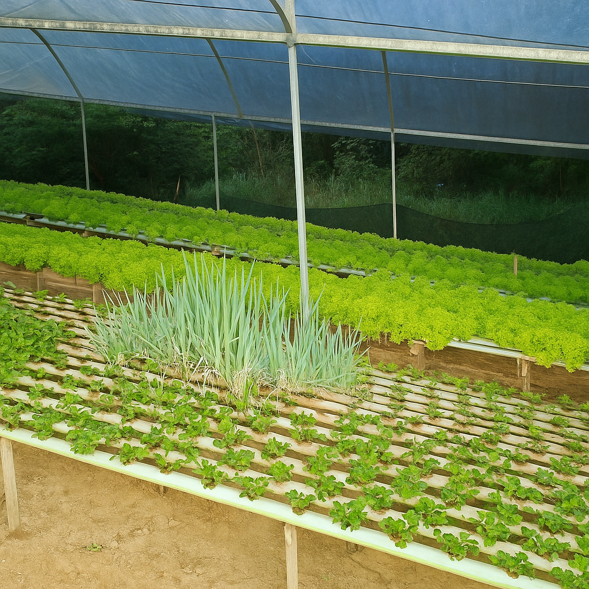
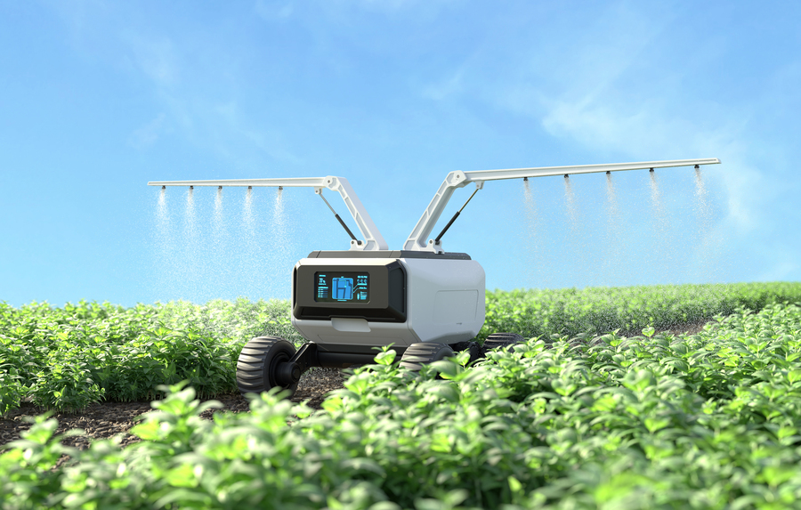
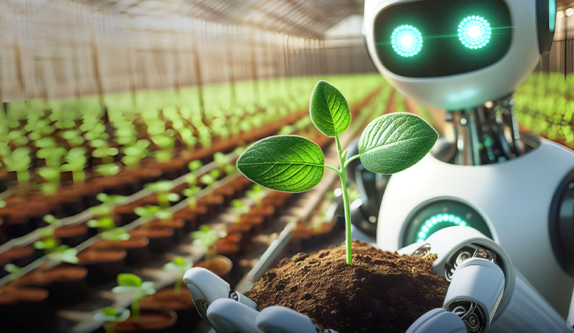
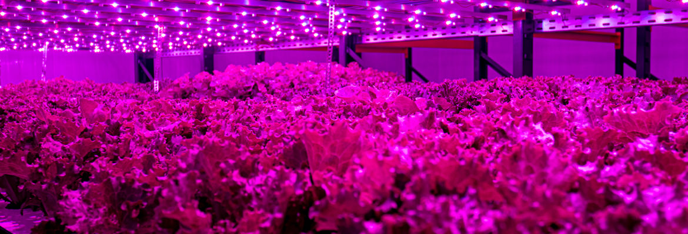
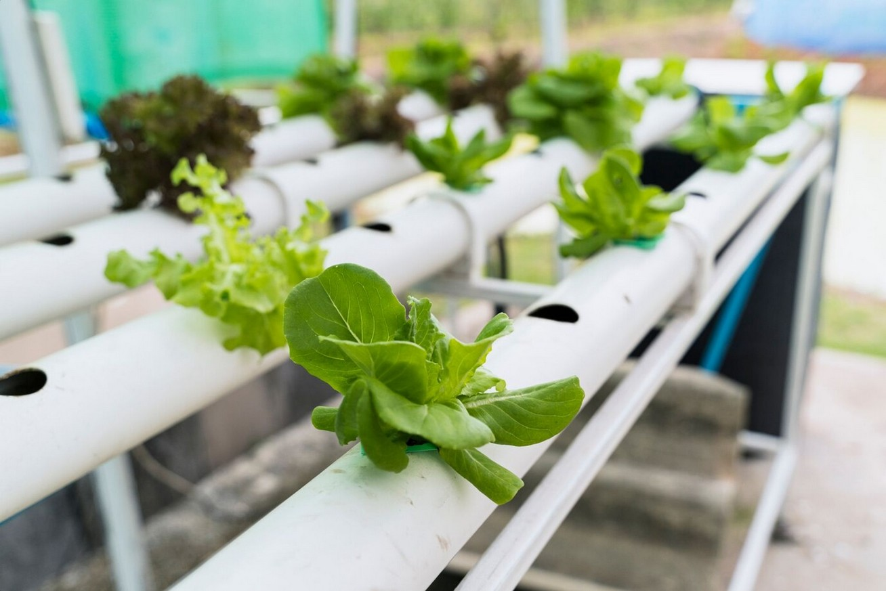

Inovação e Eficiência no Manejo de Alfaces
Produção de alface em hidroponia com filtros, bombas e solenoides garantindo circulação constante da solução nutritiva e evitando entupimentos, trazendo alto controle e estabilidade ao cultivo.

Produção de alface em hidroponia com filtros, bombas e solenoides garantindo circulação constante da solução nutritiva e evitando entupimentos, trazendo alto controle e estabilidade ao cultivo.

Sistema hidropônico com manejo profissional de alfaces, utilizando germinação em base sólida, transferência para cultivo em hidroponia fixa, controle de EC, pH e oxigenação, irrigação automatizada e ajustes conforme o clima para maior eficiência e qualidade.

A IoT tem desempenhado um papel fundamental na transformação da agricultura. A integração de dispositivos conectados está possibilitando a monitorização em tempo real de condições do solo, clima e cultivos, facilitando a agricultura de precisão.
Ler Mais
O uso de IA no setor agrícola tem se mostrado eficaz na personalização de soluções, redução do uso de pesticidas e aumento da produtividade.
Ler Mais
A Pink Farms é a primeira fazenda vertical urbana da América Latina, com o objetivo de transformar a forma como os alimentos são produzidos, focando em sustentabilidade e eficiência.
Visitar SiteAutoML ganhou força ao automatizar o design e a otimização de modelos de Machine Learning (ML). Isso permite que organizações com conhecimento técnico limitado aproveitem o ML de forma eficaz.
Detalhes
A hidroponia é uma técnica de cultivo que está revolucionando a agricultura moderna, proporcionando uma alternativa sustentável ao cultivo tradicional no solo. Baseada no crescimento das plantas em uma solução nutritiva, sem a necessidade de terra, a hidroponia oferece diversas vantagens ambientais e econômicas que a tornam uma escolha atraente para agricultores que buscam eficiência e sustentabilidade.
Ver Análise